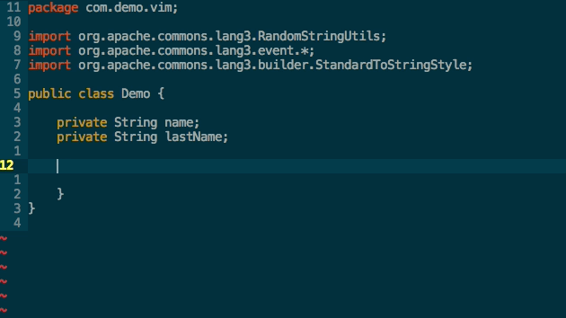

N S
Paris
Tel :
ermis B

N S
Paris
Tel :
ermis B
2017: intégrateur web de 3 mois à la Cité des sciences et de l’industrie.
2017: Animateur Atelier Lego à la Cité des Sciences, pour les enfants de 7 à 9 ans.
2015-2016 : Technicien Supérieur D’Etude en Construction métallique de l’Afpa
2014 : Baccalauréat professionnel Technicien Bâtiment Assistant Architecte Lycée professionnel Hector Guimard, Paris 19ème
Projet: MÂT SUPPORT D 'ANTENNE COULISSANT (Etude de faisabilité)
Projet: REHABILITATION D’UN APPARTEMENT (Etude de structures)
Projet: POSSOZ (rénovation d’immeuble et création d’une crèche au RDC).
Projet : CUFFIES (construction de 12 logements individuels en 4 bâtiments superposés).
Projet : SAINT LAZARE (aménagement d’une cuisine).
Projet : la GATELIERE SENLIS, (rénovation des logs collectifs).
Projet : BELLEU (construction de 12 logements individuels accessibles aux personnes à la mobilité réduite)
Projet : APPARTEMENT DU SIXIEME ETAGE
Projet : MAISON CHELLES